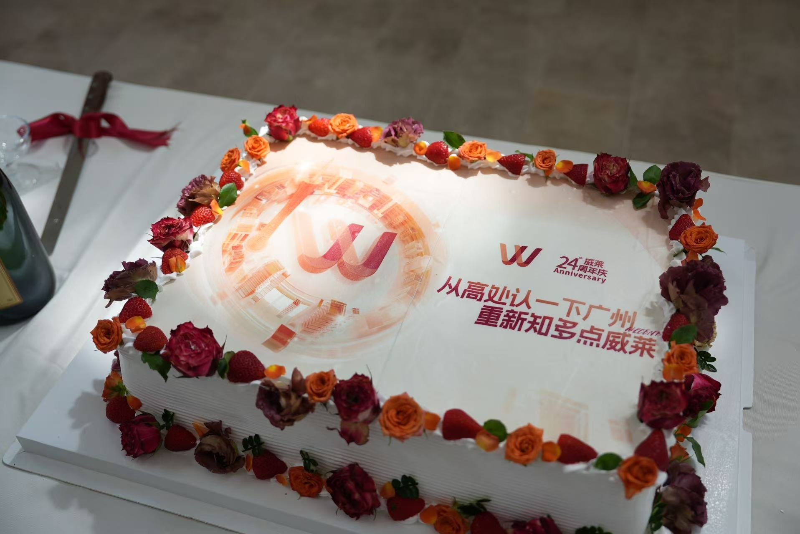
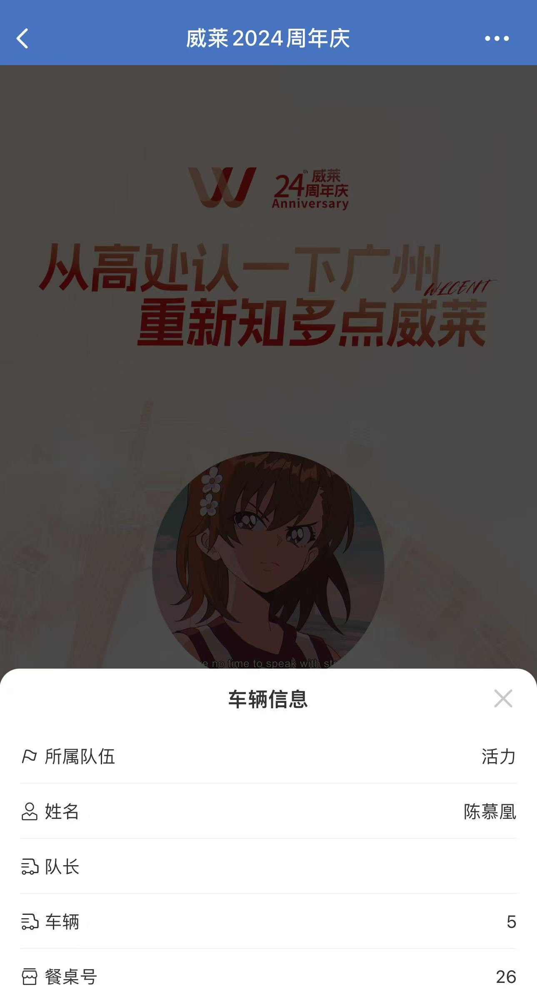
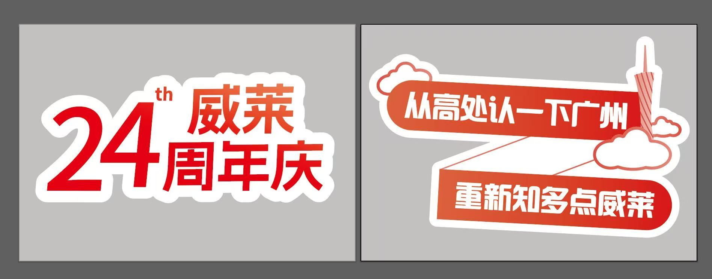
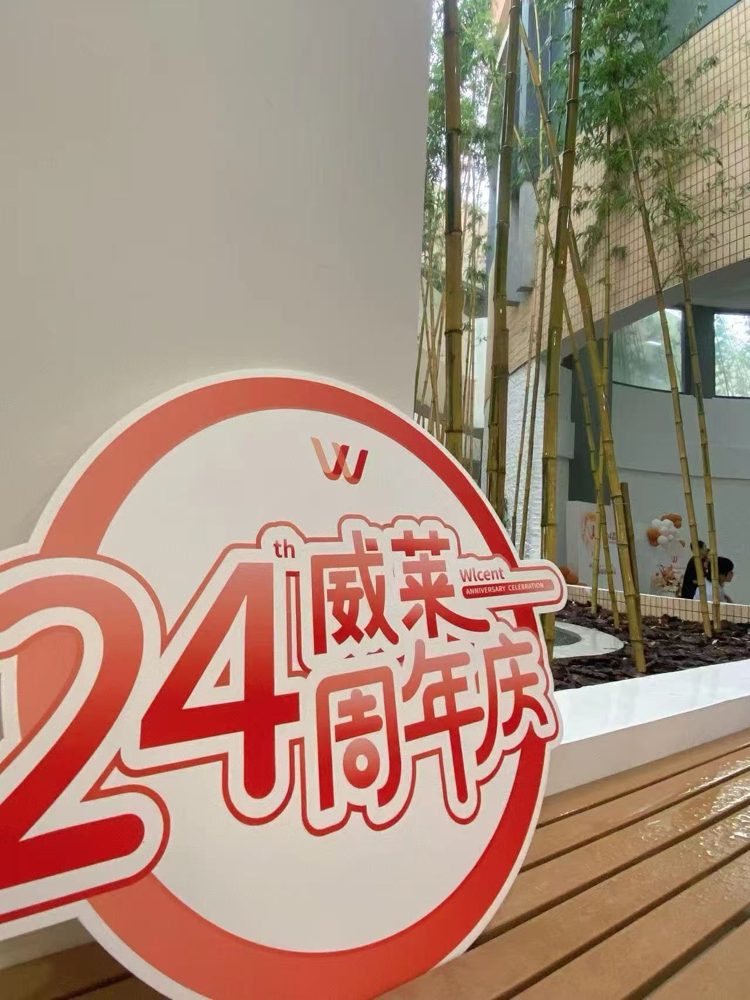
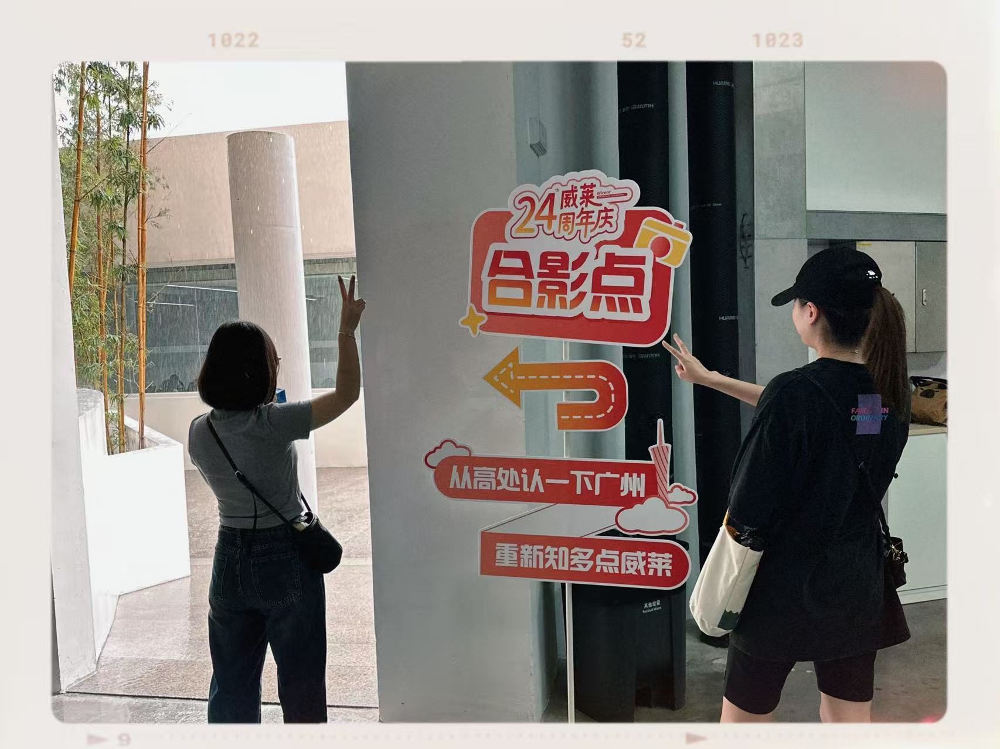
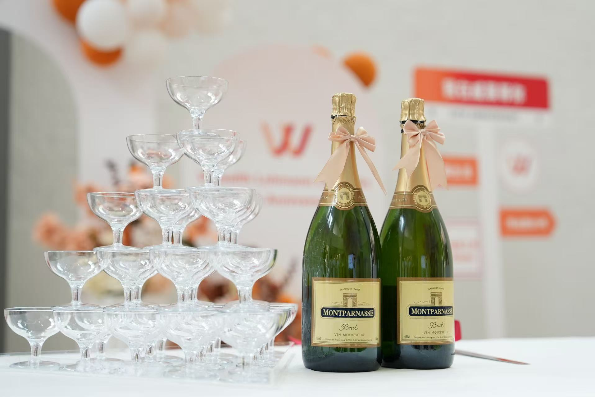

PROJECT 02 / 2024
威莱24周年庆
活动统筹 · 人员协调 · 现场执行

项目简介
让每个环节，
顺畅连接。
广州总部与异地员工齐聚广州，活动串联工厂、餐厅、广州塔及公司庆祝现场。
我负责人员、交通、餐饮与物料的统筹协调，让多地点、多团队的安排衔接成一段完整体验。
01 / 统筹思路
先明确分工，再连接行程。
将活动拆分为人员、交通、餐饮、信息和物料等工作，明确各环节的负责人及衔接时间，再沿员工当天的行程逐项确认。
集合 → 工厂参访 → 本地餐饮 → 广州塔 → 公司周年庆祝
02 / 人员与信息
安排清晰，也让员工看得明白。
根据员工及部门情况分配车辆，每车设置车队长，负责人员清点与信息同步，并提前安排就餐桌号。
将这些安排与员工身份对应。员工通过企业微信扫码，即可查看自己的队伍、车辆、车队长及餐桌信息。

03 / 协作落地
把需求交代清楚，把现场跟进到位。
协调餐厅确认人数、时间与菜单；向设计团队说明物料的使用场景，确认方案与制作要求；再跟进供应商交付和现场摆放。



我负责需求沟通、方案确认与执行协调；视觉设计由内部设计团队完成，物料由供应商制作。
04 / 周年现场
复杂留在后台，体验留给员工。
从工厂参访、城市体验，到回公司切蛋糕、拍照与庆祝，让分散的活动节点自然衔接。

活动结束后，继续整理与复盘。
整理照片、制作活动回顾图文，并收集反馈、复盘执行情况，为下一次活动积累经验。